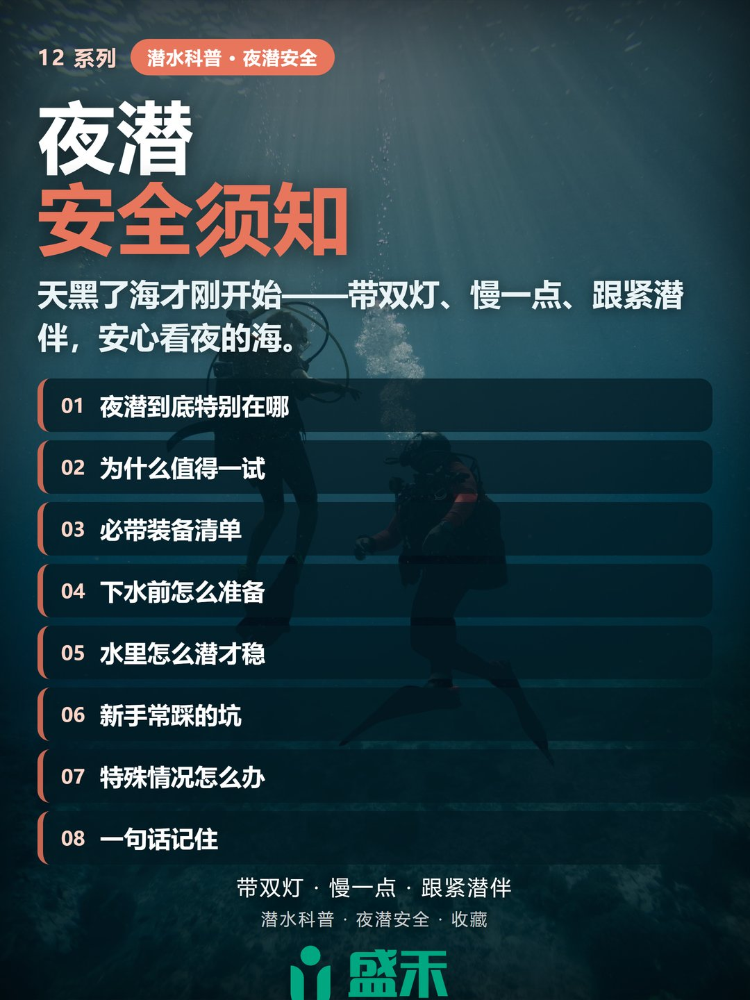
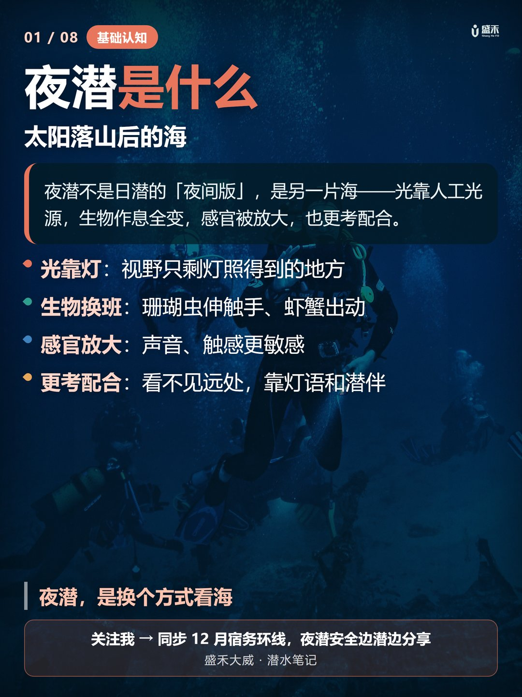
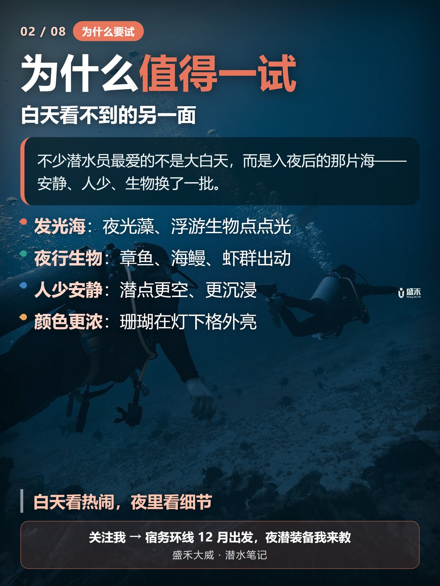
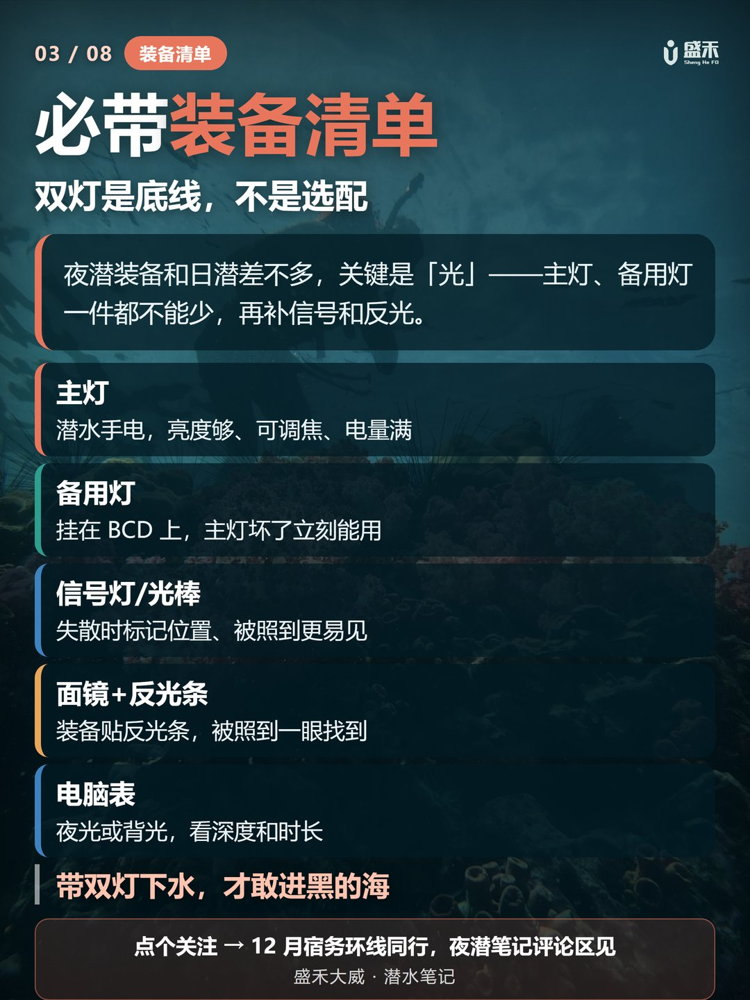
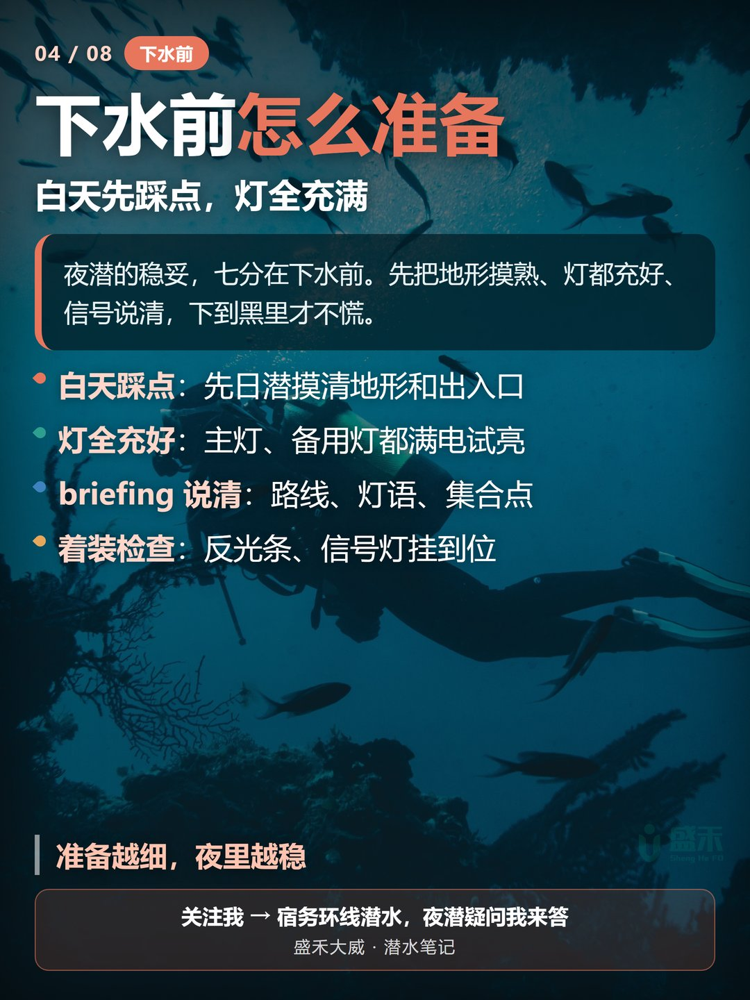
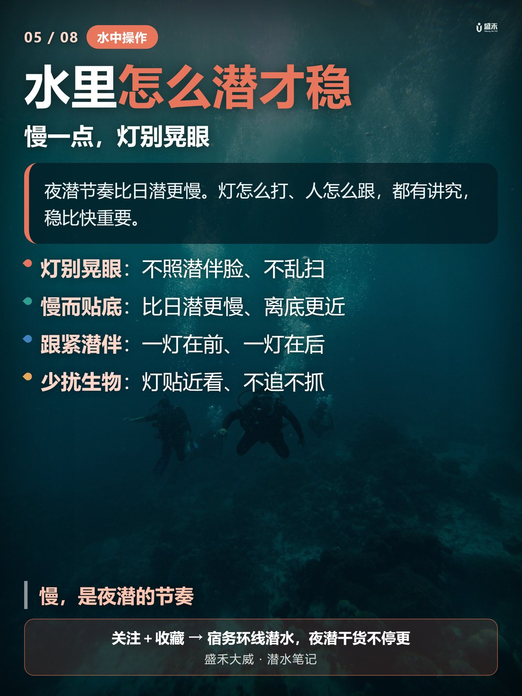
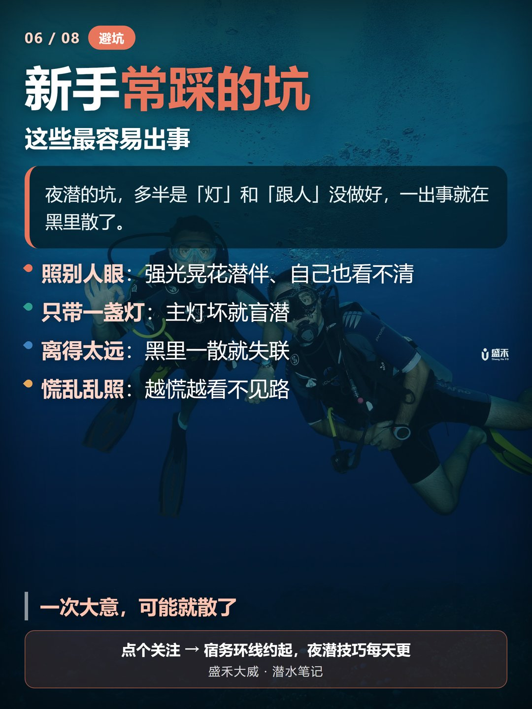
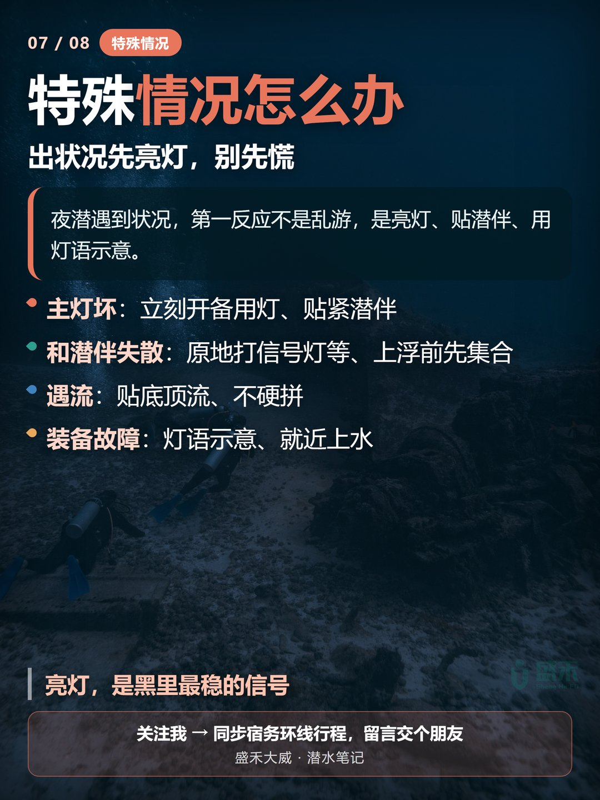
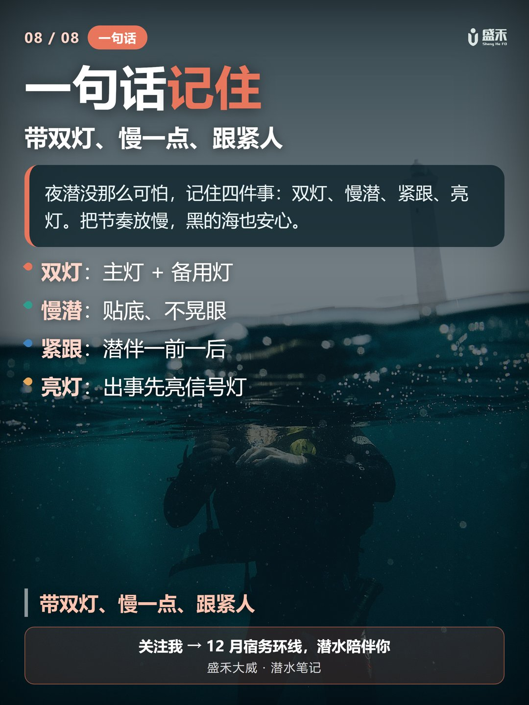

天黑了海才刚开始。夜潜不是日潜的「夜间版」，而是另一片海：光线全靠人工光源，生物换了一批，感官被放大，也更考团队配合。想在黑的水里安心看夜的海，记住三件事：带双灯、慢一点、跟紧潜伴。When the sun is down, the sea is just beginning. Night diving isn't the "night version" of a day dive — it's a different sea: light comes only from your own sources, the cast of creatures changes, your senses are dialed up, and teamwork matters more. To enjoy the dark water calmly, remember three things: bring two lights, slow down, and stay close to your buddy.
夜潜最大的不同是「光环境」。太阳一落，海里就只剩你手电照得到的那一小片视野，方向感、距离感都会被压缩。与此同时，海洋进入另一班作息：珊瑚虫伸出触手、虾蟹章鱼开始活跃，有些海域还能看到夜光藻或浮游生物发出的点点微光。The biggest change is the light environment. Once the sun sets, you only see the slice your torch illuminates; your sense of direction and distance shrinks. At the same time the ocean switches shifts: corals extend their polyps, shrimp and octopuses stir, and in some waters you'll catch the faint glow of bioluminescent plankton.
也因为看不见远处，夜潜对潜伴配合、灯语沟通的要求更高——白天一个人低头看看没事，夜里一低头可能就找不着人了。Because you can't see far, night diving demands more of your buddy work and light-signal communication — a quick look-down alone is fine by day, but at night you might lose your buddy the moment you look away.

夜潜让不少潜水员上瘾。白天躲起来的章鱼、海鳗、虾群夜里纷纷出动；某些季节和海域，夜光藻被水流扰动会泛起蓝色微光；夜间潜点通常游客更少，节奏更沉浸；手电集中照射时，珊瑚和鱼的颜色在白天下往往被水吸收，夜里反而更鲜艳。Night diving hooks a lot of divers. The octopuses, moray eels, and shrimp that hide by day come out at night; in some seasons and waters, dinoflagellates glow blue when stirred by the current; night sites are quieter with fewer visitors; and under a focused beam, colors the water washes out by day come back vivid at night.
白天看热闹，夜里看细节。By day you watch the show; by night you see the details.

夜潜装备和日潜差别不大，但「光」是关键。主灯要亮度足够、可调焦、电量满；备用灯挂在 BCD 上，主灯出问题时能立刻顶上；信号灯或化学光棒用来在失散时标记位置、也便于被潜伴或船只发现；面镜和装备贴反光条，被灯光照到更容易被识别；电脑表调到夜光或背光，随时看深度、时间和免减压极限。Night gear isn't far from day gear, but light is everything. Your primary torch should be bright, focusable, and fully charged; a backup light rides on your BCD so you can grab it the instant the main fails; a signal light or chemlight marks your position if you're separated and helps buddies or boats spot you; reflective tape on mask and kit makes you easy to pick out; and set your computer to its glowing or backlit mode to read depth, time, and NDL.
双灯不是选配，是夜潜的底线。Two lights isn't optional — it's the floor for night diving.

夜潜的稳妥，七分在下水前。没去过的地方，最好白天先潜一次，摸清地形和出入口；主灯、备用灯都充满，入水前再试一次；briefing 把路线、最大深度、潜伴灯语、失散程序、集合点都讲清；反光条和信号灯别等到黑里才发现没挂好。For a calm night dive, seventy percent of the work is before you enter. At new sites, do a daytime checkout dive first to learn the layout and exits; fully charge both lights and test them again before entry; sort out route, max depth, buddy light signals, lost-buddy procedure, and rendezvous point in the briefing; and check reflective tape and signal lights before the dark hides them.
准备越细，夜里越稳。The more detailed your prep, the steadier your night.

夜潜的节奏要比白天慢一个档次。手电不要直射潜伴面部，也不要在水面或沙底乱扫——会晃到别人、惊扰生物，还会把自己晃晕；移动更慢、离底更近，减少踢动幅度；建议一灯在前、一灯在后，保持随时能看见的距离；想看清楚就慢慢靠近，别追、别抓、别长时间照射同一只生物。Night pacing is a notch slower than by day. Don't shine your torch into your buddy's face or sweep it across the surface or sand — it blinds others, spooks life, and dizzies you; move slower and stay closer to the bottom to cut your kick; run one light ahead and one behind, keeping a distance you can always see; and to get a good look, approach slowly — don't chase, grab, or beam one creature for too long.
慢，是夜潜的节奏。Slow is the tempo of night diving.

夜潜出状况，多半是灯或跟人没做好。强光一晃，潜伴短暂失明，自己也容易慌乱；只带一盏灯，主灯坏了就等于在黑里盲潜；离潜伴太远，黑里超过几米就看不见，再想找回来很难；越慌越乱扫，越扫越看不清，越容易失散。Most night trouble comes from lights or buddy spacing. A hard beam blinds your buddy for a moment and rattles you too; one light only means a dead primary leaves you diving blind; too far from your buddy and a few meters of dark hides them for good; panic makes you sweep wildly, which blinds more and loses the buddy faster.
一次大意，可能就散了。One careless moment can split the team.

出状况时，第一反应不是乱游，而是亮灯、贴潜伴、用灯语示意。主灯坏了，立刻打开备用灯，贴近潜伴，用手势沟通；和潜伴失散，原地打信号灯等待，按 briefing 约定时间上浮集合；遇流贴底、顶流、不硬拼，必要时就近结束潜水；装备故障，用灯语示意潜伴，共同决定继续还是上水。When something goes wrong, don't thrash — light up, get on your buddy, signal. Primary dies: switch on the backup, close in, communicate by hand. Lost buddy: stay put, flash your signal light, and ascend to the rendezvous at the agreed time. Current: hug the bottom, don't fight it, and end the dive nearby if needed. Gear failure: signal your buddy and decide together whether to continue or surface.
亮灯，是黑里最稳的信号。A lit light is the steadiest signal in the dark.

夜潜没那么可怕，记住四件事就行：双灯（主灯 + 备用灯）、慢潜（贴底、不晃眼）、紧跟（潜伴一前一后）、亮灯（出事先亮信号灯）。Night diving isn't that scary — just four things: two lights (primary + backup), slow diving (near the bottom, no wild sweeping), stay close (buddy one ahead, one behind), and light up (signal first when trouble hits).
带双灯、慢一点、跟紧人，黑的海也安心。Two lights, slow down, stay close — and the dark sea feels safe.

我是盛禾大威，一名约 80 瓶的 PADI 潜水员，专长顶尖中性浮力与夜潜。潜水科普持续更新——12 月我会在菲律宾宿务环线潜水，一边复习一边把这类安全细节分享出来，欢迎留言聊聊你的夜潜经历。I'm Shenghe Dawei, a PADI diver with ~80 logs, specializing in peak performance buoyancy and night diving. More dive notes are on the way — this December I'll be on the Cebu loop in the Philippines, sharing safety details as I review. Drop a comment about your night-dive experience.